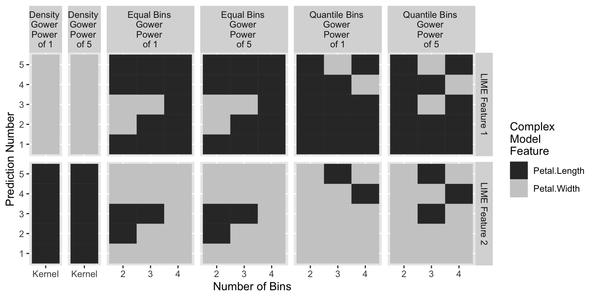
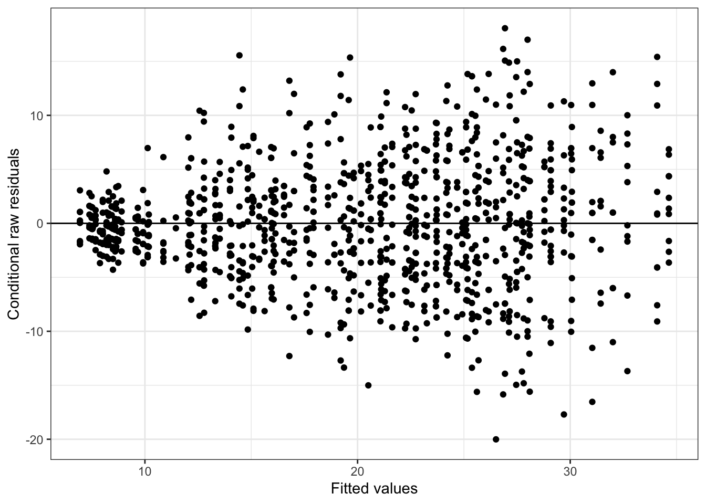

I’ve written and/or helped to develop a handful of R packages:
I hope you find them helpful. 😄 Descriptions of them are included below.
ggResidpanel

ggResidpanel is an R package Katie Rey and I developed for creating panels of diagnostic plots for residuals from a model using ggplot2. It also allows for the creation of interactive versions of the plots using plotly. The package ic available on CRAN. An overview of the package can be found at this website. The source code can be found in the GitHub repository.
Here is an example panel of diagnostic plots created using ggResidpanel.
# Fit a linear model
lm_model1 <- lm(Volume ~ Girth, data = trees)
# Use the resid_panel function from ggResidpanel to create a panel of diagnostics plots
ggResidpanel::resid_panel(lm_model1)
limeaid

limeaid is an R package for assessing explanations created using the R package lime. The current implementation was developed to be used with classification models with a binary response and continuous features. The package can be installed from GitHub, and additional information on limeaid is available on the GitHub repository.
Example of a feature heatmap depicting LIME explanation across various tuning parameters for a random forest fit to the iris data.
library(limeaid)
library(randomForest)
# Iris training and testing
iris_test <- iris[1:5, 1:4]
iris_train <- iris[-(1:5), 1:4]
iris_lab <- iris[[5]][-(1:5)]
# Fit a random forest model to the iris training data
set.seed(20200334)
rf <- randomForest(Species ~ .,
data = cbind(iris_train,
Species = iris_lab))
# Run apply_lime on the iris data
lime_applied <- apply_lime(
train = iris_train,
test = iris_test,
model = rf,
label = "virginica",
n_features = 2,
sim_method = c('quantile_bins',
'equal_bins',
'kernel_density'),
nbins = 2:4,
gower_pow = c(1, 5),
return_perms = TRUE,
seed = 20200334
)
# Extract the explanations from the apply_lime output
explanations <- lime_applied$explain
# Create a heatmap of the features chosen
plot_feature_heatmap(explanations)
redres

redres is an R package developed to help with diagnosing linear mixed
models fit using the function lmer from the lme4 package. It is meant to
supplement the lme4 package. redres was created by me, Kellie McClernon, Jing Zhao, Yudi Zhang, and Yonghui Huo as a project for STAT 585 (taught by Dr. Heike Hoffman). The package is
currently only available on GitHub, but we hope to update it and add it
to CRAN. More information can be found on the package website and GitHub repository.
Here is an example using redres to plot the raw conditional residuals from an lmer model.
library(redres)
library(lme4)
# Fits a linear mixed effects model
m <- lmer(height ~ rep + treatment*variety + (1|rep:treatment) + (1|rep:treatment:variety),
data = paprika)
# Use redres to create a residual plot using the conditional residuals
plot_redres(m)